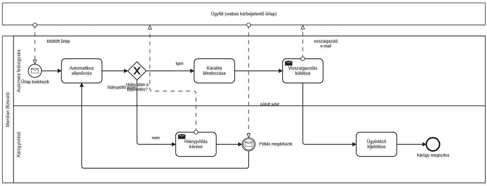

Meridian Biztosító: kárbejelentés több szereplővel
Medence, sávok és üzenetáramlás használata egy több szereplős folyamat modellezésére, valamint annak bemutatása, hogyan jelennek meg a strukturált adatok a folyamatban.
- több szereplős modellt rajzoltál: medence (pool), sávok (lane), üzenetáramlás;
- megérted, miért űrlapon érkezik egy kárbejelentés és nem emailben/telefonon;
- lesz egy modellünk, amire a félév automatizálási és AI-példái hivatkozhatnak.
Hogyan érkezik a valóságban egy kárbejelentés?
Ebben az esetben webes kárbejelentő űrlapot használunk: kötelező mezőkkel, legördülő listákkal és fájlfeltöltéssel. A strukturált adat könnyebben ellenőrizhető és feldolgozható. A valóságban e-mailben, telefonon vagy más csatornán is érkezhet bejelentés; ezek egységesítéséhez további munka kell. A Meridian Biztosító fiktív példafolyamatában az űrlap beérkezése után automatikus ellenőrzés indul, majd hiánypótlás vagy az ügyintéző kijelölése következik.
Ha a döntés pontosan leírható szabályokkal, először hagyományos automatizálásban gondolkodj. Szabad szöveg, fénykép vagy összetett egyedi helyzet elemzésénél AI is segíthet, de az eredmény ellenőrzése továbbra is szükséges. A strukturált adat és az AI nem zárja ki egymást; azt válaszd, amit a feladat indokol.
Építsd meg a Meridian kárfelvételi folyamatát
- Új diagram. Húzz be a palettáról egy medencét (pool, a fekvő téglalap ikon), és nevezd el: Meridian Biztosító.
- A medencét kijelölve a helyi eszköztár Add lane above vagy Add lane below lehetőségével hozz létre két sávot. Neveik: Automata feldolgozás és Kárügyintéző. Ha a medence csak üres téglalap, a csavarkulccsal váltsd kifejtett (expanded) medencére, majd add hozzá a sávokat.
- A felső sávba: kezdő üzenet-esemény (kör borítékkal): Űrlap beérkezik → Automatikus ellenőrzés → XOR-kapu: Hiánytalan a bejelentés?
- Az igen ág marad fent: Kárakta létrehozása → Visszaigazolás küldése (küldő tevékenység: tegyél a tevékenységre boríték-jelölést a csavarkulccsal: Send Task).
- A nem ág átmegy az ügyintézői sávba: Hiánypótlás kérése (Send Task) → köztes üzenet-esemény: Pótlás megérkezik → vissza az Automatikus ellenőrzés-hez (visszacsatoló nyíl).
- A folyamat vége az ügyintézői sávban: Ügyintéző kijelölése → Kárügy megnyitva (záró esemény).
- Tedd mellé az ügyfelet: második, üres (összecsukott) medence Ügyfél (webes kárbejelentő űrlap) névvel, és húzz szaggatott üzenetáramlásokat: ügyfél → kezdő esemény (kitöltött űrlap), hiánypótlás-kérés → ügyfél, ügyfél → pótlás megérkezik, visszaigazolás → ügyfél.

Az üzenetáramlások szaggatott vonallal jelennek meg, és a medencék között futnak. A hiánypótlás után a folyamat visszatér a már meglévő Automatikus ellenőrzés lépéshez, tehát ehhez nem kell új ellenőrzési tevékenységet létrehoznod.
Ha mást látsz: ellenőrizd, hogy a megfelelő kapcsolattípust használod-e. Medencék között nem lehet hagyományos folyamatágat (sequence flow, folytonos nyílat) használni; itt üzenetáramlásra (message flow, szaggatott nyílra) van szükség. Ha a megfelelő elemeket kötöd össze, a bpmn.io ezt általában automatikusan kezeli.
- Banki hitelkérelem, egyetemi jelentkezés, garanciális ügyintézés: mind űrlap + automata előszűrés + emberi döntés.
- Az ötödik napon banki ügyintézési folyamatot modellezel és szimulálsz; a hatodik napon CRM-adatokat készítesz és töltesz be.
- A negyedik napon egy gyakorló kárportálba robot rögzít bejelentéseket; a nyolcadik napon a Meridian kárügyeinek adatbázisából robot készít riportot.